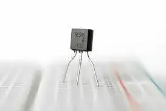
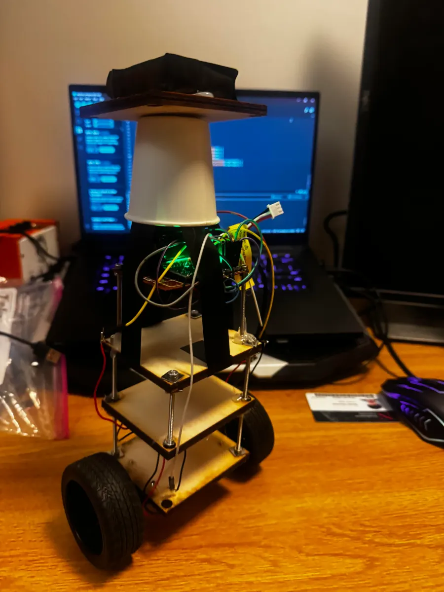
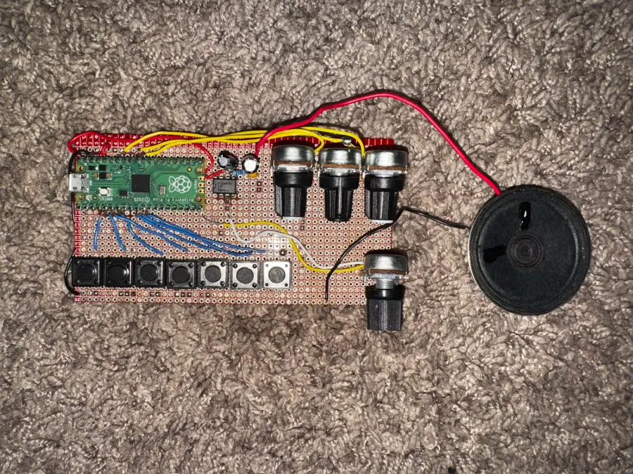

Chapter 01
Projects
Everything here I built end to end — and documented while building it. Each entry is the real working log, not a summary written after the fact.
Game development
Engines, editors and gameplay systems — mostly Godot and raw C.
3 Dev paused
Dev paused
The Elevator
A fast first-person dungeon crawler set in a brutalist tower you dream every night, and can only wake from by reaching the bottom.

Seed Breeder
A Farming game built with SDL2 and C
- C
- SDL2
- SDL2_ttf

Transistor Playground
A Godot 3D simulation of transistors. You can make working logic gates with transistors such as XOR gates or AND gates and its expandable.
- Godot 4.2+
- GDScript
Electronics
Microcontrollers, analog circuits and control loops.
2
Self Balancing Robot
A two-wheeled robot that balances itself on an ESP32 and MPU-6050, running a 200 Hz PID loop tunable live over Bluetooth.
- ESP32 DevKit C
- MPU-6050
- DRV8833
- N20 200RPM motors

Digital Synthesizer
A three-phase monophonic synthesizer built on the Raspberry Pi Pico. You can play the C Major scale with it and you can change the pitch, tone and octave using knobs to make all sorts of sounds. Overall its a very simple bare bones synthesizer with good utility.